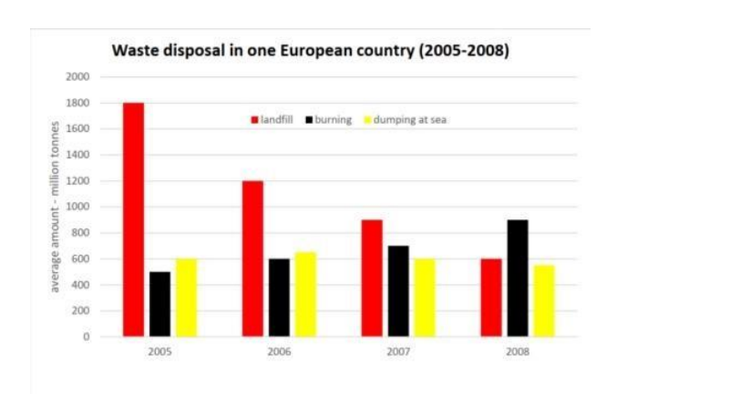

Article
Read the article, then confirm below to continue.
Comprehension & vocab
Questions on the article you just read, plus True/False/Not Given statements.
Comprehension
1. According to the article, what is the primary motivation for most cybercrime?
2. According to the article, what is ransomware?
3. According to the article, how many computers were affected by the WannaCry attack in 2017?
4. According to the article, what is spear-phishing?
5. According to the article, what happened to the average number of attacks per company between 2020 and 2021?
6. According to the article, what should you do if a company contacts you unexpectedly and asks for personal information?
True / False / Not Given
1. All cybercriminals are highly skilled and technically advanced.
2. The WannaCry attack affected computers in more than 100 countries.
3. The World Cup phishing scam only targeted people who bought tickets.
4. A single cyber attack costs businesses an average of $200,000.
5. Identity fraud losses in the US totalled $56 billion in 2021.
6. Installing software updates can help protect against known vulnerabilities.
Reading Practice
Open the test in a new tab, complete it, then come back here.
Full Reading Test
40 questions across multiple passages. Complete whichever section your teacher assigns.
📖 Open reading passageWriting Task 1: the article
Background reading on waste disposal trends — study the highlighted language before you write.
■ subject synonyms ■ numerical language ■ useful Task 1 chunks
Evolution of Municipal Waste Management Strategies Across European Jurisdictions
The structural transformation of national waste management infrastructure reflects broader environmental policy mandates aimed at phasing out ecologically damaging disposal methods in favor of energetic recovery and controlled processing. Comparative longitudinal assessment highlights a pivotal shift away from land-based containment toward high-efficiency thermal conversion over multi-year operational cycles.
Environmental policy interventions have driven significant reallocation among primary disposal mechanisms: subterranean land-disposal — historically the dominant baseline method — has experienced a steady, systematic reduction. Regulatory disincentives, landfill diversion targets, and land-use constraints have progressively curtailed reliance on unmanaged ground storage.
Energy-from-waste initiatives and incineration technology have seen consistent operational scaling. Thermal conversion has steadily expanded its share, eventually overtaking traditional land containment as the primary disposal mechanism. Meanwhile, maritime discharge rates have remained relatively inelastic throughout the period, fluctuating within a narrow band before exhibiting a slight downward trajectory under tighter international maritime regulations.
Task 1 report
Mini exam block — write your response with the stopwatch running.
The graph below shows the methods used to dispose of waste in a European country between 1995 and 2020. Summarise the information by selecting and reporting the main features, and make comparisons where relevant. Write at least 150 words.

Sample answer
Model response, with useful comparison language marked.
The line graph illustrates the percentage of waste disposed of via three methods — landfill, incineration, and marine dumping — in a European country between 1995 and 2020.
Overall, landfill use declined substantially over the period, while incineration rose steadily to become the dominant method by 2020. Marine dumping remained a comparatively minor method throughout, showing only a slight downward trend.
In 1995, landfill was the most common disposal method, accounting for 68% of waste, while incineration handled just 16% and marine dumping 14%. Over the next 25 years, landfill use fell consistently, dropping to 58% in 2000, 46% in 2005, and continuing its decline to reach 18% by 2020.
By contrast, incineration rose steadily throughout the period, climbing from 16% in 1995 to 24% in 2000, then continuing upward to overtake landfill as the leading method sometime between 2010 and 2015. By 2020, incineration accounted for 56% of total waste disposal, more than triple its 1995 figure.
Marine dumping fluctuated only slightly, hovering between 12% and 15% for most of the period before declining more noticeably in the final years, falling to just 6% by 2020.
Speaking Part 2 & 3
Choose a topic set below. Each has a Part 2 cue card and 3 Part 3 follow-up questions. You only get one attempt per question, so make sure you're ready before you start recording.
Video & comprehension
Watch, then answer the questions below.
1. According to the video, what percentage of teenagers get the recommended 8–10 hours of sleep per night?
2. What major factor is preventing many teenagers from getting enough sleep?
3. According to the video, when do teenagers' bodies typically begin releasing melatonin?
4. Why is waking a teenager at 6 a.m. compared to waking an adult at 4 a.m.?
5. Which of the following is mentioned as a possible consequence of chronic sleep deprivation among teenagers?
6. What do many sleep-deprived teenagers consume to compensate for their lack of sleep?
7. According to the video, what happens to teenagers' attention when they do not get enough sleep?
8. What was found in one study for every hour of sleep lost by teenagers?
9. What happened to school absences in one district after later school start times were introduced?
10. What school start time does the speaker ultimately recommend for middle and high schools?
Gap Fill
Word box: sleep deprivation · biological · melatonin · epidemic · caffeine · adolescence · reasoning · concentrate · attention · hopeless · obesity · transportation · academic · absences · safety
1. Sleep among American teenagers is described as an epidemic.
2. Teenagers experience a delay in their clock around the time of puberty.
3. Their bodies wait to begin releasing until around 11 p.m.
4. Many teenagers use large amounts of to compensate for chronic sleep loss.
5. is a period of dramatic brain development.
6. During adolescence, the brain develops areas responsible for higher-order thinking, including and problem solving.
7. When teenagers do not get enough sleep, they may struggle to .
8. Their can also decrease significantly as a result of sleep deprivation.
9. For each hour of lost sleep, one study found a 38% increase in feeling sad or .
10. Teenagers who regularly lack sleep are at increased risk of physical health problems, including .
11. Later school start times can lead to fewer school .
12. Students with later start times tend to perform better .
13. Changing school start times can create logistical challenges involving bus routes and costs.
14. Later start times can improve students' mental and physical health while also increasing public .
15. The speaker argues that later start times benefit both student health and performance.
Vocabulary Matching
Day 10 complete! 🎉
All 8 tasks done. Come back tomorrow for the next day.